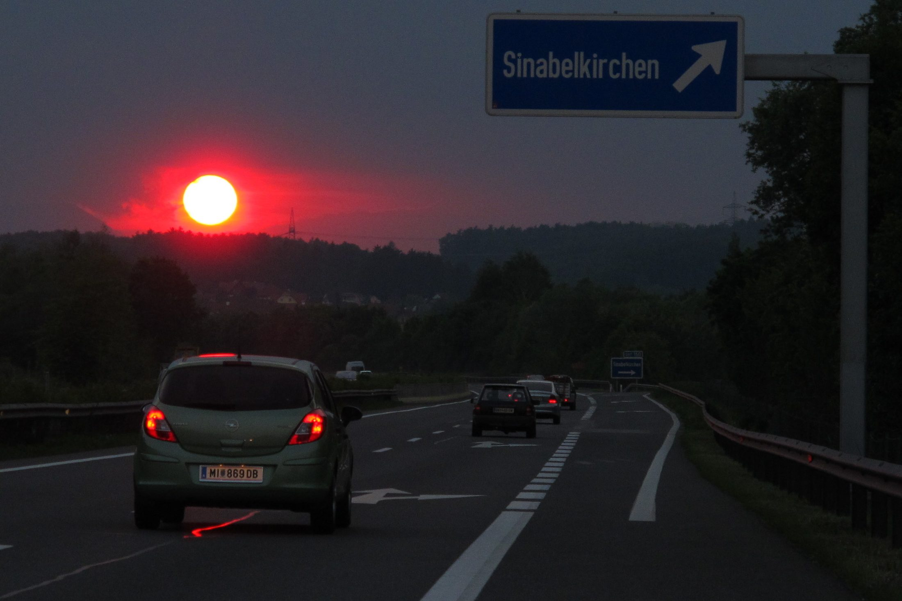
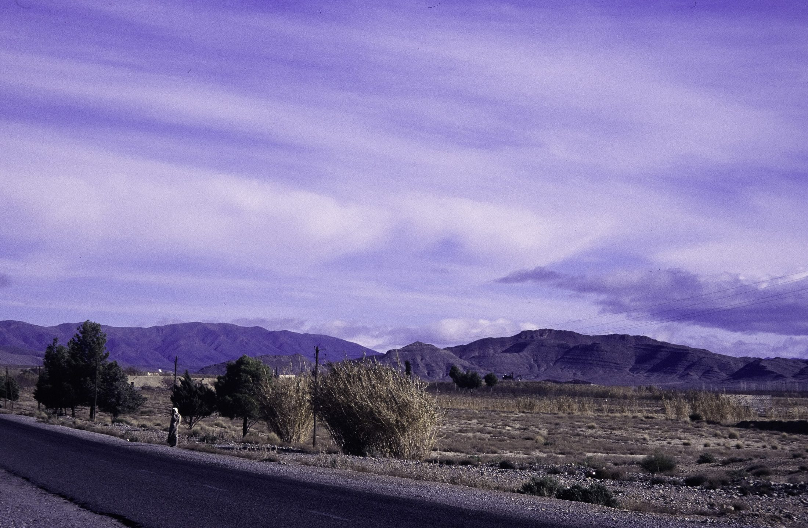
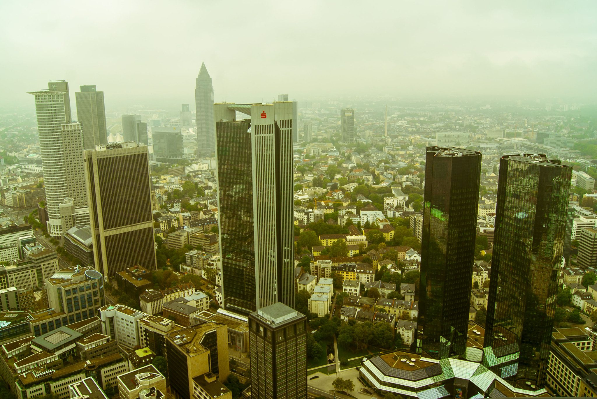
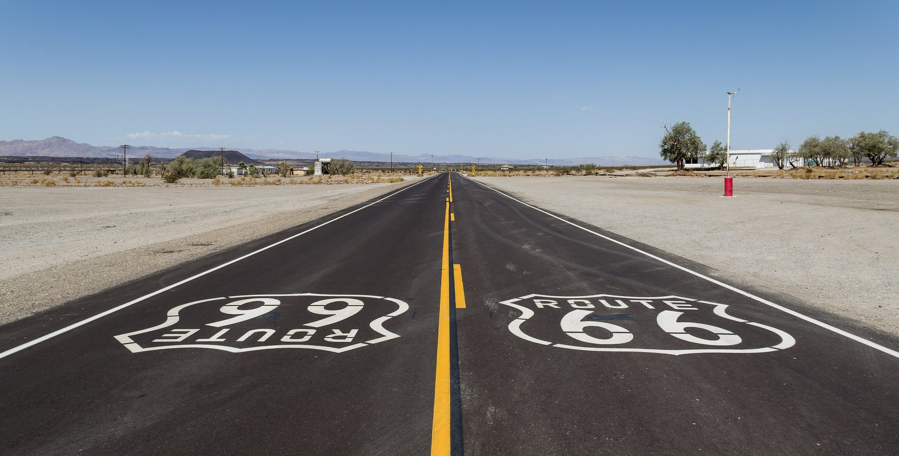

Layer 06 · Possible
Horizon
The city ends where the possible begins.
Scroll

01
Edge
Where the last street
becomes a field
Cities do not end. They fade. A petrol station, a warehouse, a horse, a billboard for the city you just left. Then wind.
Photo · Eastman Childs
Possible



02
Departure
Everyone here is from
somewhere else
The horizon is the only part of the city that belongs to everyone equally. It is the direction people arrived from and the direction they promise to leave in.
Photo · José Sáez

03
Possible
Im-possible
means not yet
Take the hyphen out and you get a wish. Leave it in and you get a place. This city is the hyphen: the gap between what was drawn and what got built. Thank you for walking it.
Photo · Dietmar Rabich
Im-possible means not yet.Layer six, Horizon